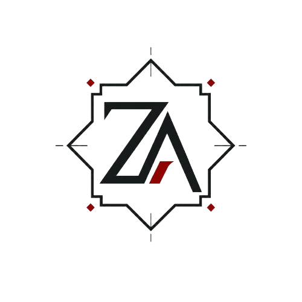

Backend & Java
Je consolide mes bases en programmation orientée objet, en structuration de projets Java et en conception d’applications simples mais propres.

BENZAKOUR ZaydÉtudiant en BUT Informatique
Je construis progressivement mes compétences en développement, bases de données, Linux et administration de serveurs à travers des projets concrets.
Je suis étudiant en BUT Informatique à Nancy. Je m’intéresse particulièrement au développement backend, aux bases de données, à Linux et aux environnements serveur. À travers mes projets personnels et universitaires, je cherche à apprendre en construisant des solutions concrètes, utiles et évolutives.
Je consolide mes bases en programmation orientée objet, en structuration de projets Java et en conception d’applications simples mais propres.
Je travaille avec SQL, Oracle SQL et PL/SQL pour comprendre la modélisation, les requêtes et la logique côté base de données.
Je mets en place un serveur personnel avec Raspberry Pi, Docker et des services réseau pour apprendre l’administration système de manière concrète.
Site web personnel destiné à présenter mon profil, mes compétences, mon parcours et mes projets. Ce portfolio est aussi un projet d’apprentissage : il me permet de travailler la structure HTML, le design CSS, l’organisation d’un projet web et le déploiement progressif vers un site professionnel avec nom de domaine.
HTML, CSS, JavaScript, Git, GitHub
En cours
Mise en place d’un serveur personnel basé sur un Raspberry Pi et un SSD externe afin de centraliser, organiser et accéder à mes fichiers depuis mon réseau local. Ce projet me permet de découvrir concrètement l’administration Linux, les services réseau, Docker et les bases de la sécurisation d’un serveur.
Linux, Raspberry Pi, Docker, File Browser, Samba, SSH
En cours d’amélioration
Application console développée en Java permettant de gérer une bibliothèque de livres. Ce projet me sert à pratiquer la programmation orientée objet, l’organisation du code, la manipulation de données et l’utilisation de Git dans un projet structuré.
Java, Programmation orientée objet, Git, GitHub
En cours
Projet personnel visant à créer un espace centralisé pour organiser mes projets, mes notes techniques, mes ressources et ma progression en informatique. L’objectif est de construire progressivement un outil utile pour suivre mon apprentissage en développement, bases de données, Linux et administration serveur.
HTML, CSS, JavaScript, Git, GitHub
En réflexion
IUT Nancy-Charlemagne — Nancy
2025 - aujourd'hui
Formation en informatique centrée sur le développement, les bases de données, les systèmes, les réseaux et la gestion de projet.
Polytech Nancy — Nancy
2024 - 2025
Première expérience dans l’enseignement supérieur scientifique, suivie d’une réorientation vers le BUT Informatique afin de me rapprocher davantage de mes intérêts pour le développement, les bases de données et les systèmes.
Lycée Henri Loritz — Nancy
2024
Obtention du baccalauréat, marquant mon entrée dans l’enseignement supérieur scientifique et informatique.
Pour toute prise de contact concernant mon profil, mes projets ou une opportunité liée à l’informatique, vous pouvez me joindre via les liens ci-dessous.
Cybersécurité
Je développe mes compétences en cybersécurité à travers différents challenges, rooms et laboratoires pratiques.
@pseudo
Apprentissage guidé autour des réseaux, de Linux, de l’OSINT et de la cybersécurité.
@pseudo
Résolution de challenges techniques dans plusieurs catégories de sécurité informatique.
@pseudo
Entraînement sur des environnements réalistes et des machines vulnérables.
Dernière mise à jour : —